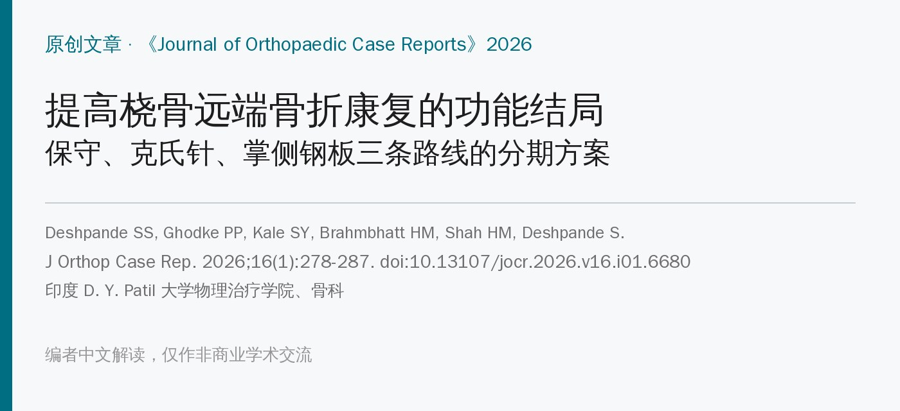
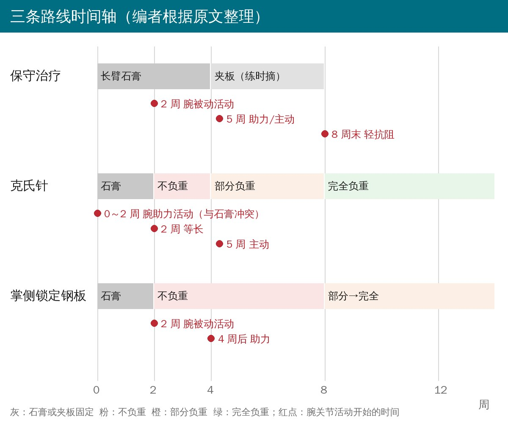
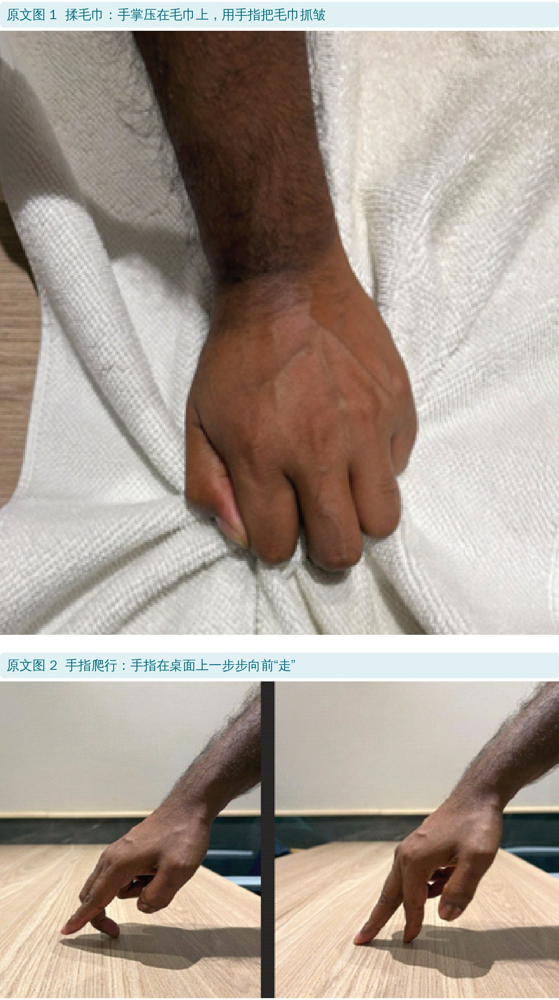
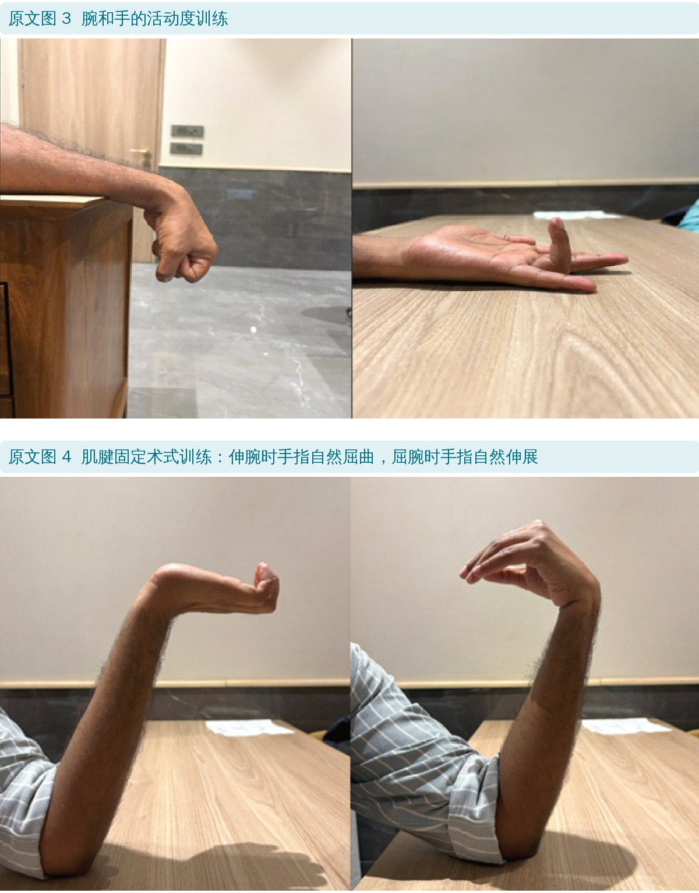
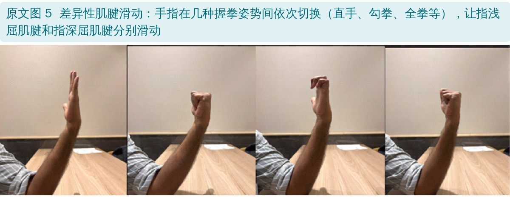
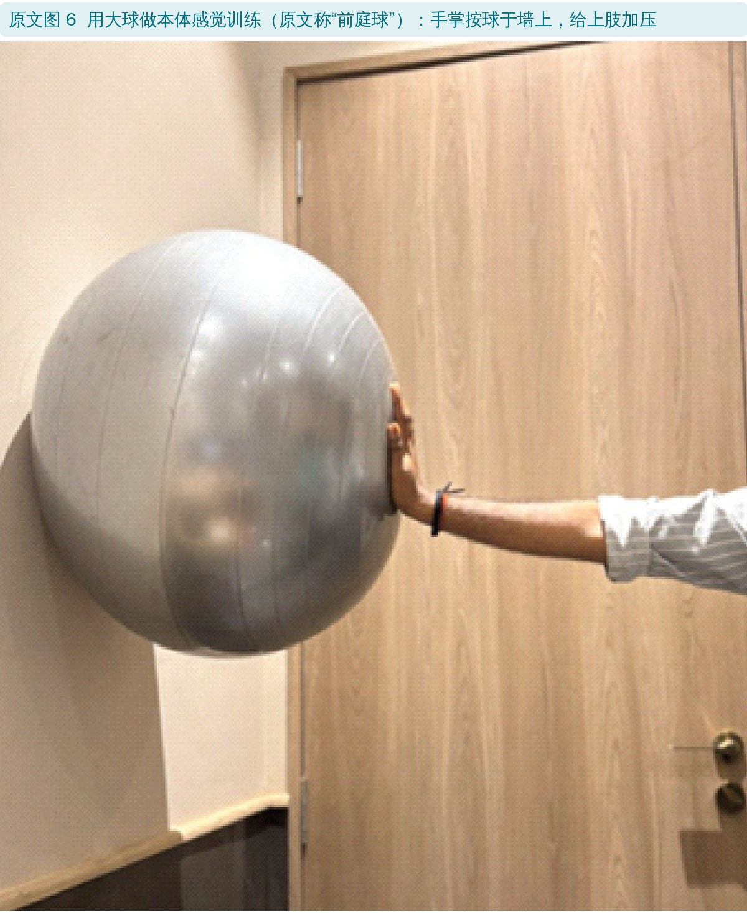
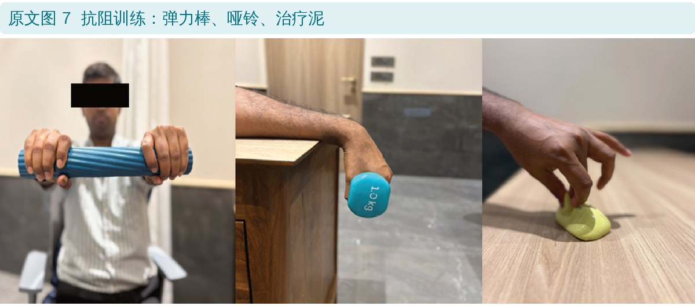
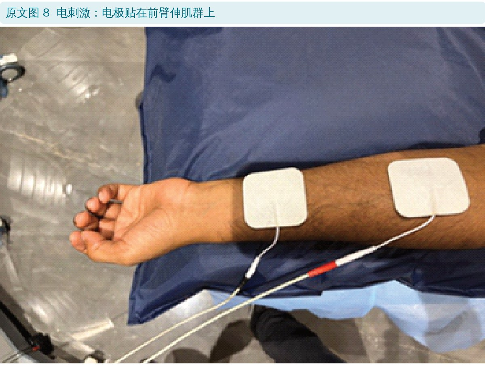
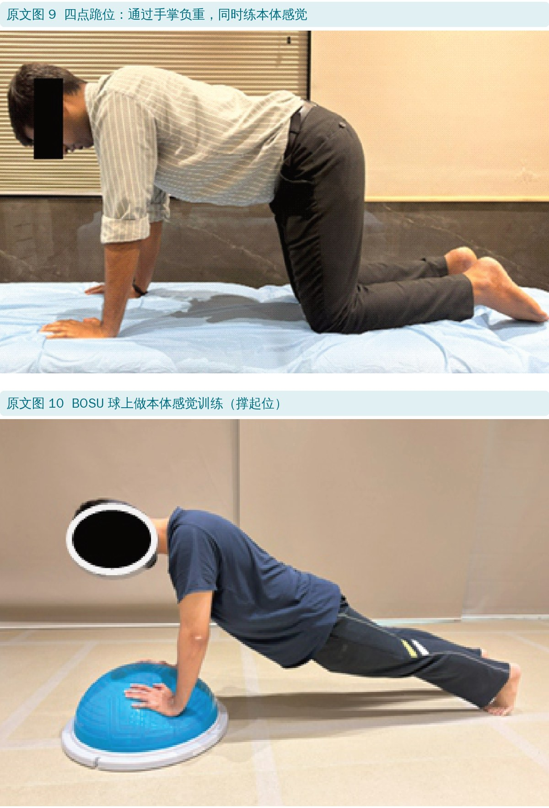
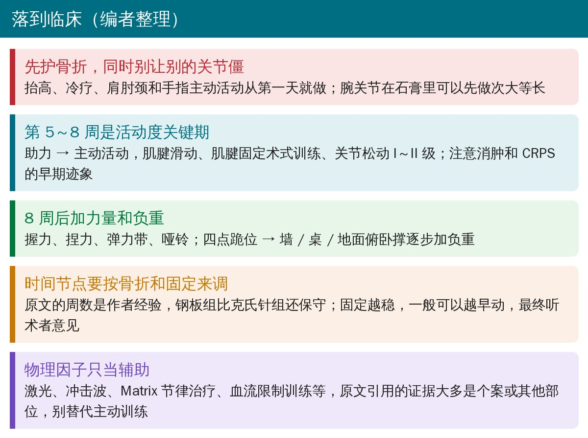

🔖原文信息（编者中文重排）
📚 文献信息
▪ Deshpande SS, Ghodke PP, Kale SY, Brahmbhatt HM, Shah HM, Deshpande S. Enhancing Functional Outcomes in Distal End Radius Fracture Rehabilitation. J Orthop Case Rep. 2026;16(1):278-287. doi:10.13107/jocr.2026.v16.i01.6680
▪ 中文题目：提高桡骨远端骨折康复的功能结局
▪ 作者单位：印度 D. Y. Patil 大学物理治疗学院、医学院骨科等
▪ 文章类型：期刊标为原创文章，实际是作者团队的分期康复方案介绍，没有患者数据，相当于专家意见
桡骨远端骨折是最常见的骨折之一，儿童青少年和老年人两头多见，两类人群的骨折类型、处理和并发症都不一样。这篇只讲成人。
桡骨远端骨折术后或拆石膏后怎么练，至今没有公认的标准方案。Cochrane 综述（Handoll 2015）的结论是各家方案五花八门，没法只靠一套；但综述和指南都指向同一点：做一些训练，总比不做好，而且早开始通常更好。
这篇的价值在于把保守治疗、克氏针、掌侧锁定钢板三条路线各自分期写清楚：每期的目标、固定、负重、训练和辅助手段，并配了 10 张动作示范照片，拿来做患者宣教很方便。
• 影像：桡骨高度、桡偏角（尺偏角）、掌倾角、尺骨变异、有无尺骨茎突骨折、下尺桡关节是否增宽
• 客观指标：腕关节活动度、握力、捏力
• 患者自评：DASH（上肢功能障碍问卷）和 MHQ（密歇根手功能问卷）最常用
三种处理方式的分期（编者根据原文整理）
| 路线 | 第 0～4 周 | 第 5～8 周 | 第 8 周以后 |
|---|---|---|---|
| 保守 | 长臂石膏（肘上到掌骨头）；2 周起腕被动活动 | 夹板，每天摘 2～3 次练；助力 → 主动；8 周末开始轻抗阻 | 9～12 周回归活动期，不再固定；≥ 12 周强化期 |
| 克氏针 | 石膏 2 周；不负重；2 周后次大等长 | 部分负重；主动活动、关节松动 I～II 级、握力捏力 | 完全负重；渐进抗阻、俯卧撑进阶 |
| 掌侧锁定钢板 | 石膏 2 周；不负重；2 周后腕被动活动 | 仍不负重；4 周后助力活动 | 部分到完全负重（按耐受）；抗阻、搬运、功能训练 |

时间节点是作者的经验做法，原文也说要按固定方式、患者依从性和术者意见调整
石膏从肘上一直打到掌骨头。这一期的重点是：护住骨折、消肿止痛、别让邻近关节僵、预防复杂区域疼痛综合征（CRPS）。
• 抬高患肢高于心脏，冷疗消肿
• 轻捏球和各种抓握动作，练腕、指的长屈肌
• 颈部和肩胛周围软组织松动：固定久了近端肌肉容易紧、弱
• 腕屈伸肌次大强度等长收缩
• 肩胛活动和后缩训练；肩、肘徒手抗阻；深呼吸和步行维持心肺
• 肩、颈、肘、手指主动活动
• 2 周起开始腕、前臂和手的无痛被动活动
换成复位后夹板，每天摘下来练 2～3 次。
• 消肿：压力手套、水肿松动手法、按摩、肌内效贴；没有肿胀时可以热敷放松前臂和手部肌肉
• 预防 CRPS：脱敏训练（不同温度、质地、刺激）加上肢活动
• 活动度：无痛的助力和主动活动；腕骨间、掌骨间、掌指关节 Maitland I～II 级松动；肌肉能量技术
• 手功能：揉毛巾、手指爬行、肌腱固定术式训练、差异性肌腱滑动
• 轻柔牵伸前臂屈伸肌和手内在肌；肩胛稳定训练（T、I、Y）
• 大球顶墙的本体感觉训练，给上肢适度加压
• 第 8 周末开始轻抗阻：弹力棒、治疗泥、弹力带或小哑铃





辅助：感应电刺激止痛、诱发主动收缩；电刺激防肌萎缩；低能量激光止痛。

不再固定。前两期的训练按需继续，再加：
• 腕屈伸肌、前臂肌、肱二头肌、肱三头肌牵伸
• 桡腕、腕骨间、掌指关节 Maitland III～IV 级松动，改善关节附属运动
• 四点跪位负重和 BOSU 球上撑起，练上肢负重和本体感觉
• 弹力带、哑铃练肘、前臂、腕力量；橡皮筋练指力；插板练精细动作

辅助：神经肌肉电刺激、冲击波、Matrix 节律治疗（原文的证据见后文）。
• 目标：腕活动度和力量回到伤前水平，上肢本体感觉和平衡，专项技能
• 弹力带、哑铃、等速设备做专项力量；游泳
• 上肢增强式训练：先双侧后单侧
• 战绳、出拳、投掷
• 术后石膏 2 周，防止再移位；患肢不负重
• 抬高、冷疗 7～10 分钟、膈肌和节段呼吸、颈肩肘主动活动
• 无痛范围内轻揉毛巾、手指爬行
• 2 周后腕屈伸肌次大等长；肩肘徒手或沙袋抗阻
• 注意早期并发症：骨筋膜室综合征、神经损伤
• 部分负重；无痛主动活动；仍肿就继续抬高
• 轻柔牵伸腕和手指，防手内在肌紧张；I～II 级关节松动
• 海绵球练握力、弹力棒练屈伸腕、捏力练习、插板
• 辅助：冷压设备、Matrix 节律治疗、冲击波、镜像疗法
• 完全负重；捏球、弹力带、小哑铃渐进抗阻；哑铃腕弯举；壶铃持握（等长）
• 肌腱滑动和肌腱阻挡训练
• 负重进阶：前臂支撑俯卧 → 手撑 → 墙俯卧撑 → 桌面俯卧撑 → 地面俯卧撑
• 辅助：等速训练、血流限制训练、水中训练
• 向患者交代术后注意事项；防早期并发症和皮肤问题；防关节源性肌肉抑制
• 术后石膏 2 周；不负重；抬高、冷疗、呼吸训练、颈肩肘主动活动
• 2 周后开始腕和手的无痛被动活动、腕屈伸肌次大等长
• 仍不负重；4 周后开始无痛助力活动
• 腕和手指牵伸；I～II 级关节松动；握力、捏力和插板训练
• 辅助：冷压设备、Matrix 节律治疗、功能性电刺激、冲击波、镜像疗法
• 按耐受部分到完全负重
• 弹力带腕和前臂弯举；治疗泥、握力器、网球练抓握；肌腱滑动
• 渐进加量的搬运、模拟日常活动、写字和捡小物件
• 划船、战绳练耐力；药球投掷练爆发力
• 早期康复：作者引用 Zhou 2024 的荟萃分析，说术后 2 周内开始康复功能更好。编者查了这篇：只纳入掌侧钢板术后的 7 项研究，早期康复改善了上肢功能、腕背伸活动度和疼痛，但腕关节功能评分和并发症没有差异
• 有训练比没训练好：作者引用 2024 年美国物理治疗协会的桡骨远端骨折临床实践指南（Mehta 2024），不论方案是否标准化
• CRPS：仍是重要并发症，可能到康复后期才显现，全程都要盯；早期活动、脱敏和镜像疗法应该成为常规的一部分
• 谁恢复得好：年龄、合并症、基线疼痛和抑郁等心理社会因素，可能比治疗方式和影像参数更能预测结局（原文这句没有给出处）
• 激光、冲击波、神经肌肉电刺激等辅助手段证据还在积累，方案之间差异大，高质量证据有限
• 证据等级低：没有研究对象、没有检索策略、没有结局数据，是作者团队的经验方案。期刊标为原创文章，摘要和正文还用了“材料与方法”标题，但内容是方案介绍
• 辅助手段的证据偏弱：Matrix 节律治疗引的是两篇个案（其中一篇是胫腓骨骨折后膝僵硬）；冷疗引的是膝关节置换术后肿胀的综述；冲击波的证据来自骨折延迟愈合和不愈合，不是常规新鲜骨折
• 钢板组的节奏偏保守：锁定钢板固定较稳，常被用来支持早期活动，原文却在钢板组安排 2 周石膏、8 周不负重，比克氏针组还慢，没有解释原因
• 优点：三条路线分开写，每期目标、固定、负重和训练都具体到动作，配图清楚，适合给患者做宣教的底稿
• 许可声明自相矛盾：文字写“Creative Commons Attribution 4.0 International License”（CC BY 4.0），链接却是 CC BY-NC 4.0。本文按更严格的 BY-NC 处理
• 保守治疗阶段 I 和石膏冲突：石膏从肘上打到掌骨头，但目标写“维持腕和指间关节活动度”，干预里有肘关节主动活动、肘部徒手抗阻，2 周起还有腕和前臂被动活动，这些在长臂石膏里都做不了；这一期还叫“早期活动期”
• 克氏针阶段 I 同样冲突：前 2 周石膏固定，同时写“前 2 周做腕和手的无痛助力活动”；目标里还有“增加上肢和握力”，放在术后即刻期也不合适
• 负重安排倒过来了：克氏针 5～8 周部分负重、8 周后完全负重；更稳的锁定钢板 5～8 周仍不负重、8 周后才“部分到完全”。克氏针组也没提什么时候拔针
• 图号引错：钢板阶段 III 写“肌腱滑动训练（图 8）”，图 8 是电刺激，肌腱滑动是图 5
• 时间段重叠：保守治疗阶段 III 是 9～12 周，强化期是 ≥ 12 周，第 12 周两期都算
• 参考文献重复：[5] 和 [15] 是同一篇（Zhou 2024）
• Zhou 2024 用得太宽：引言说它显示早期康复“改善腕关节活动”，讨论又说术后 2 周内开始功能更好。这篇只纳入掌侧钢板术后的研究，腕关节功能评分没有差异；摘要里也没有“2 周”这个分界（编者未核对全文）
• 镜像疗法“预防 CRPS”：引用的 Kotiuk 2019 研究的是已经确诊 CRPS I 型的患者，属于治疗，不能直接说明可以预防
• 冲击波用于“畸形愈合”：原文说冲击波用于骨折延迟愈合和畸形愈合，冲击波的证据针对的是延迟愈合和不愈合，它纠正不了畸形愈合
• 激光“促进骨折愈合”：引用的 Sæbø 2022 随机对照试验是拆石膏后用激光减轻疼痛和功能障碍，没有评估骨愈合
• 测量工具写成训练工具：“用握力计做腕部强化”“用捏力计改善捏力”，握力计和捏力计是用来测的
• 血流限制训练练“爆发力”：血流限制训练用的是低负荷，主要练肌肥大和力量，和爆发力训练的目标不一致
• 结论多出正文没有的内容：结论提到虚拟康复和疼痛科医生，正文都没讲
• 无出处的绝对说法：“康复 1 年后，无论固定方式和制动时长，都能恢复完整的腕和前臂活动度”，没有引用，说得也太满
• 名称不统一：图 6 图注叫“前庭球”，照片是普通健身球；正文写 Quadrupod，图 9 图注写 Quadruped（四点跪位）

🔖临床要点（编者整理）
• 第一天就开始动能动的：抬高、冷疗，肩、肘（不在石膏里时）、颈、手指主动活动，腕在石膏里先做次大等长
• 5～8 周抓活动度：助力到主动，肌腱滑动、肌腱固定术式训练、低级别关节松动，同时盯肿胀和 CRPS
• 8 周后加力量和负重：握力、捏力、抗阻；四点跪位到俯卧撑逐级加负重
• 时间点按固定方式调：原文的周数是经验值，钢板组比克氏针组还保守；固定稳、复查好的，一般可以更早活动，最终听术者意见
• 物理因子只当辅助：原文多数辅助手段的证据是个案或来自别的部位，不能代替主动训练
欢迎关注骨科康复小黄公众号，获取更多物理治疗的专业知识！
📄参考文献：
Deshpande SS, Ghodke PP, Kale SY, Brahmbhatt HM, Shah HM, Deshpande S. Enhancing Functional Outcomes in Distal End Radius Fracture Rehabilitation. J Orthop Case Rep. 2026;16(1):278-287. doi:10.13107/jocr.2026.v16.i01.6680
编者核对引用时参考：Zhou Z, et al. BMC Musculoskelet Disord. 2024;25:198. doi:10.1186/s12891-024-07317-0；Kotiuk V, et al. Br J Pain. 2019;13(1):35-42. doi:10.1177/2049463718782544；Sæbø H, et al. Photobiomodul Photomed Laser Surg. 2022;40(1):33-41. doi:10.1089/photob.2021.0125（摘要信息来自 PubMed）
原文以知识共享署名—非商业性使用 4.0 协议（CC BY-NC 4.0）开放获取。本文为非商业学术交流用的中文解读：原文图 1～10 为照片，图内无文字，编者裁切后加了中文图注；表格、首图、时间轴和临床要点卡为编者根据原文整理。仅供学习交流，如有侵权请联系删除。